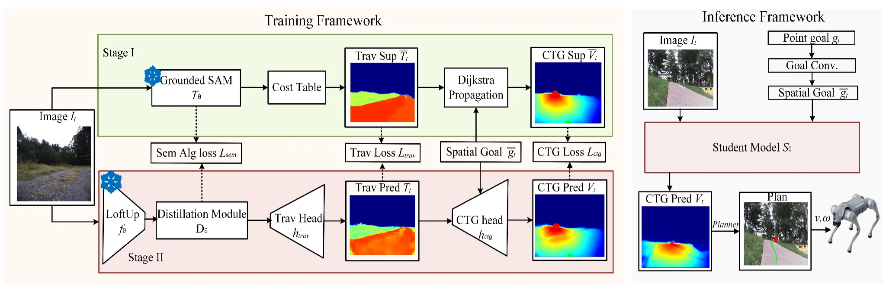

Visual navigation from monocular RGB observations remains challenging due to the need for reliable scene understanding and safe decision-making in diverse real-world environments. Existing modular approaches often depend on additional sensing or interaction-heavy pipelines for reliable traversability estimation, while end-to-end methods typically infer navigation-relevant structure indirectly through trajectory-centric supervision. Motivated by these observations, we propose Value-Guided Navigation (VGN), an RGB-based framework for learning dense traversability-aware and goal-conditioned planning representations for downstream navigation. To achieve this, we leverage vision foundation models together with classical planning algorithms to generate dense traversability and cost-to-go pseudo-labels directly from static RGB images. This supervision is generated without trajectory supervision or robot interaction and is used to train the student planning representation model. The learned representation is planner-agnostic and can be integrated with multiple downstream planning mechanisms. Experiments across multiple outdoor datasets, closed-loop simulation environments, and real-world deployment on a Unitree Go2 robot demonstrate effective RGB-based traversability estimation and local motion planning.
Visual navigation from monocular RGB is attractive because cameras are inexpensive, information-rich, and already available on most mobile robots. The challenge is that a robot must infer more than what is visually present: it must understand which regions are physically traversable, how that traversability should influence motion toward a particular goal, and how to turn those visual cues into a safe plan. Classical modular pipelines make this structure explicit, but reliable traversability estimation often depends on additional sensing, temporal aggregation, robot interaction, or carefully engineered mapping components. These requirements can make perception and planning stacks heavier and harder to scale across diverse environments.
End-to-end navigation methods take the opposite route by learning actions, waypoints, or trajectories directly from visual observations. Although these systems can be highly reactive, navigation-relevant scene structure is usually learned indirectly through demonstrations, reinforcement learning, or optimization trajectories. VGN targets a middle ground between these two paradigms: rather than predicting only a trajectory, it learns an explicit, dense planning representation from static RGB imagery. The key representation is a goal-conditioned cost-to-go (CTG) field, which preserves spatial planning structure, changes naturally with the target location, and remains usable by different downstream planners.
VGN converts a monocular RGB observation into an explicit planning representation instead of directly regressing a trajectory. During training, a teacher first grounds semantic regions in the image and maps those regions to traversability costs. A projected image-space goal is then introduced, and classical planning propagates this information through the traversability field to produce a dense goal-conditioned CTG target. In parallel, the student learns semantic structure from the teacher while predicting its own dense traversability map.
The predicted traversability map is combined with the current projected goal by the CTG head, allowing the student to infer how costly or desirable each image region is with respect to that particular destination. Once training is complete, the teacher and classical supervision pipeline are discarded. At deployment, the robot needs only the current RGB image and point goal: the student predicts traversability and the goal-conditioned CTG in a single feed-forward pass, and a lightweight planner turns this representation into a local image-space path and motion commands.
Because VGN learns a dense planning representation rather than a planner-specific action output, the same prediction can be reused by different downstream mechanisms. We evaluate explicit graph search, direct CTG-gradient rollout, and gradient-guided sampling, allowing the perception model and planner to remain modular while sharing the same learned navigation representation.

The traversability prediction stays fixed while changing the goal produces a different CTG field, allowing the planning representation to adapt to the desired destination.
We train VGN using static RGB imagery and evaluate cross-environment generalization on RUGD, RELLIS, GOOSE, NaviTrace, and Cityscapes. Beyond representation quality, we evaluate complete closed-loop navigation in Forest and City simulation environments and deploy the learned system on a Unitree Go2 across outdoor, cluttered, indoor, narrow-trail, and low-light conditions.
Training on RUGD transfers to multiple unseen outdoor and urban datasets.
| Train → Test | Trav. MAE ↓ | IoU@0.5 ↑ | CTG Corr. ↑ |
|---|---|---|---|
| RUGD → RUGD | 0.037 | 0.933 | 0.952 |
| RUGD → RELLIS | 0.060 | 0.880 | 0.968 |
| RUGD → GOOSE | 0.073 | 0.816 | 0.864 |
| RUGD → NaviTrace | 0.098 | 0.764 | 0.775 |
| RUGD → Cityscapes | 0.050 | 0.915 | 0.920 |
| Method | Forest Success ↑ | Forest SPL ↑ | City Success ↑ | City SPL ↑ |
|---|---|---|---|---|
| iPlanner | 64% | 0.639 | 65% | 0.649 |
| ViPlanner | 55% | 0.546 | 70% | 0.699 |
| POVNav | 55% | 0.465 | 21% | 0.173 |
| VGN (graph search) | 80% | 0.682 | 68% | 0.659 |
| VGN (direct gradient) | 68% | 0.853 | 71% | 0.957 |
| VGN (gradient sampling) | 65% | 0.924 | 68% | 0.989 |
The final page uses high-resolution videos arranged two per row, so each environment can be inspected directly instead of only through the full project video.
@inproceedings{anonymous2027vgn,
author = {Anonymous Authors},
title = {VGN: Value-Guided Navigation from RGB for Robot Motion Planning},
booktitle = {International Conference on Learning Representations},
year = {2027},
}